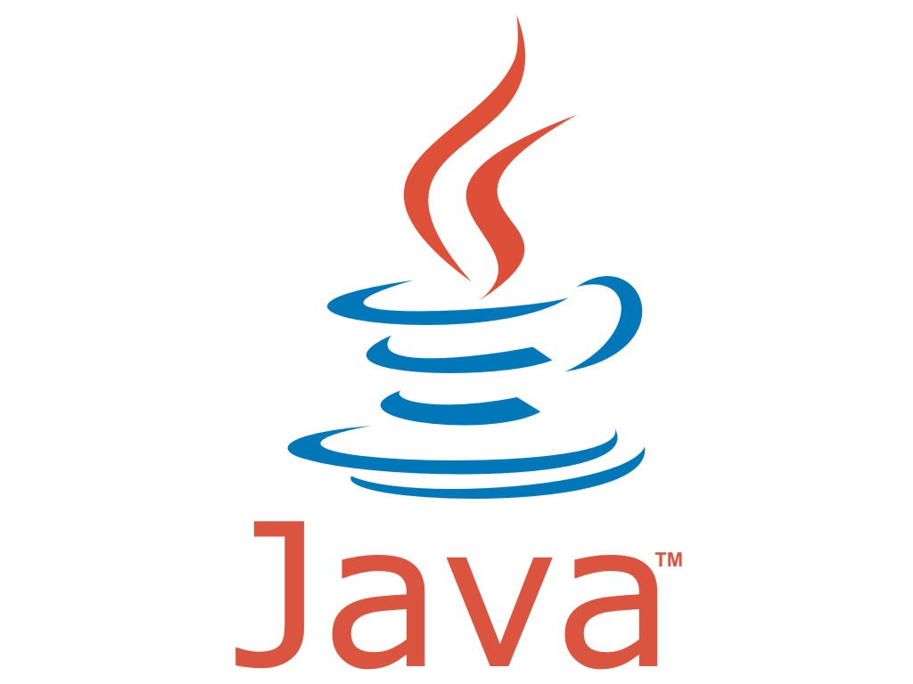

SO WHAT WORK EXPERIENCE HAVE I GOT?

Java Demonstrator
• Helping university students develop code for their Java module.
Based in the Computer Science labs at the university, when a student needed advice/help with
their Java code, I would teach them the fundamentals of what they were attempting and guide
them along the right path.
Microsoft Intern
As of July 2014 I will be working as a Software Development Engineer in Test at Lift London.
Vice President (CSS)
• Liaised with technology bodies in order to bring careers advice to the members of the
Computer Science Society.
• Worked in a close committee, organising social events and assisting the President with the
delegation of duties and other responsibilities
Lead Ambassador
• Representing the School of Computer Science/University of Birmingham.
Visitors including potential students, parents or any professional bodies saw me as a representative
of the university; I conducted tours and presentations to the potential students and guests about the
University.
• Organisation and management of other ambassadors
After working as a student ambassador for half a year I was then asked to become the head student
ambassador for the School of Computer Science by the Admissions and Marketing Coordinator. I
played an active part in the planning and organisation of applicant visit days and open days. As
well as the organisation of other student ambassadors to ensure the smooth running of the days.
• Helping out with any events held at the University of Birmingham.
Since my time as a Student Ambassador I worked at many different events such as: Computing at
School Conference, university open days, applicant visit days and also workshops held in
Computer Science for secondary school pupils.